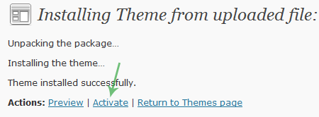

Some info about...
Created: June 13th, 2011
By: JVANOEL Team
Website: jvanoel.com
Email: jvanoelhelp@gmail.com
Last editted: June 13th, 2011
You made a great choice!
Thank you for purchasing Nuance. If you have any questions that are beyond the of this documentation, please feel free to email via my user page contact form here.
Also if you see some parts of this documentation that are not totally clear, please let us know so we can improve this documentation and help you with something when it's needed.
The Theme. How it works
1) InstallationTop
1) Extract the package file you downloaded from ThemeForest. You'll see these directories:
- Nuance - Contains the zipped file you'll use to install the theme
- Documentation - The documentation files (you're viewing the documentation now.
- PSD - The Photoshop files
- Licensing - The theme license
2) If you're not using the latest WordPress version please update it.
3) Go to WordPress Admin → Themes (under Appearance) → Install Themes (located on top) → Upload (menu on top) → Find the theme in your computer and upload it → Activate (check the screenshot bellow).

2) JWPanelTop
JWPanel is a custom made theme options panel. Options in Nuance are separated into 4 sections: General, Portfolio, Blog and Appearance.
Everything is straight forward and explained right there.
In the sidebar menu under "Comments" you'll see "Nuance Options", that's it.
3) Adding ContentTop
We tried to make it as easier as possible to use and give you the enormous flexibility in content management. Here is how to add some pages, posts, sliders...
3a) Portfolio
Portfolio Posts
This is a custom post type. In the left menu in WordPress admin you'll notice "Portfolio" section bellow "Posts", everything else is same like when adding a post.
You can use the content composer on portfolio posts, add a top slider, add lightbox images... Those options are located in custom meta boxes bellow the "title" and "content" and are explained right there.
Portfolio listing
To add a page with the portfolio listing simply go to create a new page, and as the "Page template" choose Portfolio. After you do that you can choose numerous options in the meta boxes bellow the "Title" and "Content" field.
3b) Testimonials
This is a custom post type. In the left menu in WordPress admin you'll notice "Testimonials" section bellow "Portfolio" And "Posts", everything else is same like when adding a post. When adding a testimonials you'll see 3 fields: Author, Position and Testimonial. Position is for example "CEO of Company.inc" or something like that (what is the author of the testimonial) the other 2 fields are self-explanatory.
You can also assign categories to testimonials. The "Testimonials" module in the "Content composer" has an option to select a category from which you want to show the testimonials
One custom widget is related to the testimonials, it's "JW - Testimonials" which will show the testimonials with a nice little fading effect. You can find more info about that in the widgets section of the documentation.
One composer module is related to the testimonials, it's the "Testimonials" module, it gives you a bit more flexibility then the widget.
4) Content ComposerTop
We think we can say that we've made one of the most flexible ways to manage your content in a WordPress theme.
It's powered with modules. These modules are specially made for the Content Composer. For now you can use these modules:
- Blank - This module doesn't have a specific purpose like the rest of them. There's a textarea field tere and you can use it for any content you want, either it's a simple textual paragraph or a shortocode or whatever you want.
- Separator - As the name says this module is used for content separation, it will clear the floats and make spacing between sections of the page. You can also add an optional dashed line to the separator.
- Latest Tweet - Simple, it shows you latest tweet. If you for example want a listing of the latest tweets you can use the "Blank" module with a shortcode but more about that in the shortcodes section of this documentation.
- Service - This is one element that every single theme has so it deserves a special module. Show content with an image on the left side of the content, there are quite a lot of icons to choose from.
- Testimonials - The name says it all, this module is used to show your latest testimonial with a few options. Chosoe the category, type (scroller or list) and other options you might need.
- Portfolio - Show your most recent portfolio posts (from a specific category if you want) with a lot of flexibility in layout.
- Blog - Pretty much the same as "Portfolio" module but for blog posts.
- Contact Form - Shows a contact form. This module has no special options, the email address to which you will receive emails is set in the JWPanel.
Every one of these modules has 3 common fields besides the one that are module specific. Those common fields are:
- Title - This field is for your own descriptional purpose only. The text you enter here will be shown in the drag&drop part of the content composer for easier understanding of what the modules you inserted are for.
- Before - What you enter here will be shown before the actual content that's outputed by the module. It can be a heading or a text paragraph or whatever you need there.
- After - What you enter here will be shown after the actual content that's outputed by the module. It can be a heading or a text paragraph or whatever you need there.
5) ShortcodesTop
5a) Columns
First of all you might not need to use these shortcodes, because the "Content composer" makes columns managment en easy task.
You probably know how to use these shortcodes already since like every theme has columns. But in case you don't let's go over it.
Available shortcodes
- [one_half]
- [one_half_last]
- [one_third]
- [one_third_last]
- [two_third]
- [two_third_last]
- [one_fourth]
- [one_fourth_last]
- [three_fourth]
- [three_fourth_last]
Usage
Simply wrap your content with the appropriate shortcode.
[one_half]Content[/one_half]
Things you should have in mind
1) The "last" - As you can see all the shortcodes have 2 variations like [one_half] and [one_half_last]. The last column is always with the "last". Like this example:
[one_third]content[/one_third] [one_third]content[/one_third] [one_third_last]content[/one_third] [one_third]content[/one_third] [two_third_last]content[/two_third_last]
2) The shortcodes are always relative to the full width (960px), so if you're for example using the column shortcodes in a page with a sidebar have in mind that the shortcodes will be wide the same as they would be on a full width page (no sidebar). So it would be like:
[one_third]content[/one_third] [one_third_last]content[/one_third_last]
5b) Styled Elements
Notifications
[error]Text to highlight[/error] [notification]Text to highlight[/notification] [information]Text to highlight[/information] [download]Text to highlight[/download]
Buttons
[button color="grey|black|orange|blue|green|purple|pink|red" link="http://your-link-here.com"]Button text[/button]
Toggle
[toggle title="Title of the toggle"]Content of the toggle[/toggle]
When you're using more then one toggle after each other wrap them with [toggles] shortcode which will remove the automatic brake tags WordPress makes.
[toggles] [toggle title="Title of the toggle"]Content of the toggle[/toggle] [toggle title="Title of the toggle"]Content of the toggle[/toggle] [toggle title="Title of the toggle"]Content of the toggle[/toggle] [/toggles]
Separator
[separator] [separator line="no"]
Contact Form
The email is set in JWPanel under "General".
[contact_form]
Box
A simple wrapped content box:
[box]The content goes here[/box]
Wrapped content box with title:
[box title="The title goes here" color="orange|green|pink|blue|brown|black"]The content goes here[/box]
Tabs
[tabs color="red|brown|pink|green|blue|purple|black" title_1="1st tab title" title_2="2nd tab title" title_3="3rd tab title"] [tab]Content of the first tab.[/tab] [tab]Content of the second tab.[/tab] [tab]Content of the third tab.[/tab] [/tabs]
4) Custom WidgetsTop
Nuance comes with 6 custom made widgets:
- JW - Contact Form - Shows a contact form. This widget has no special options, the email address to which you will receive emails is set in the JWPanel.
- JW - Latest Posts - Shows a list of latest posts. You can choose the amount you want to show and the type of posts(blog or portfolio).
- JW - Popular/Latest/Comments - Shows popular and latest posts and comments in tabs.
- JW - Recent Tweets - Show a list of recent tweets.
- JW - Slider Posts - Shows latest posts(blog or portfolio) in a slider.
- JW - Testimonials - Shows a list of latest testimonials.
Thanks wordTop
Once again, thank you so much for purchasing this WordPress theme. As I said at the beginning, I'd be glad to help you if you have any questions relating to this theme. No guarantees, but I'll do my best to assist.
Justin van Oel